Để giúp bạn pha chế trà xoài thành công, chúng tôi xin giới thiệu những dụng cụ tâm đắc nhất, từ cơ bản cho việc sơ chế và pha trà, đến những công cụ nâng cấp chuyên nghiệp hơn.
Bạn không thể pha Trà Xoài ngon nếu không có bí quyết! Dưới đây là những tài liệu của chúng tôi có thể giúp bạn tạo được những ly Trà Xoài tuyệt hảo
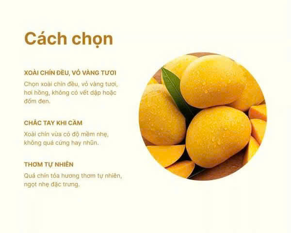
Ở giai đoạn chuẩn bị cốt trà và mứt xoài, bạn cần bốn món đồ cơ bản sau: một chiếc bình ủ trà chuyên dụng, một chiếc dao gọt gốm sắc bén, một chiếc rây lọc để nước trà trong suốt, và một chiếc thớt kháng khuẩn.
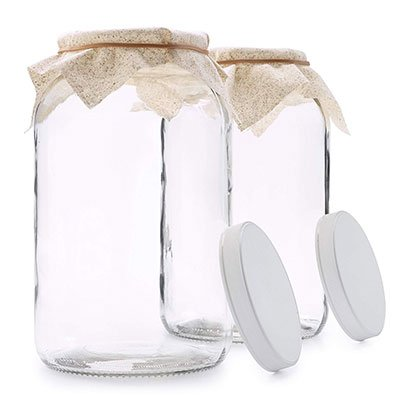
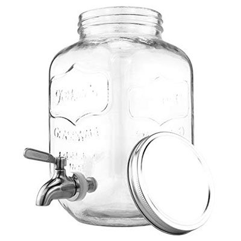
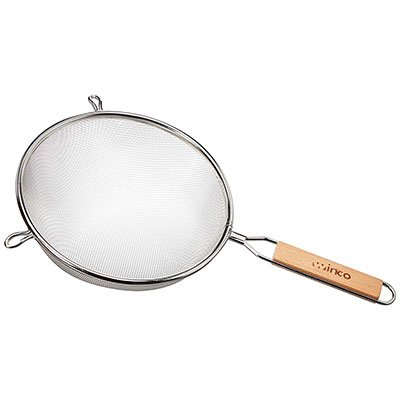
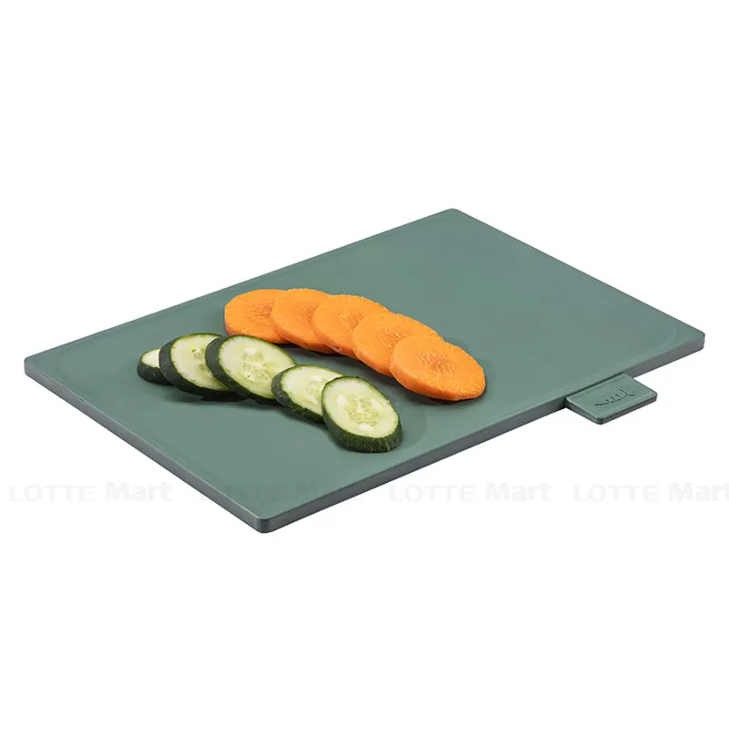
Để ly trà xoài có lớp bọt mịn dày dặn như ngoài tiệm, bạn nên sở hữu bình lắc shaker. Ngoài ra, bạn có thể dùng chai thủy tinh nắp gài để bảo quản trà trong tủ lạnh được lâu hơn, kết hợp với nhãn dán ghi chú ngày pha và máy xay sinh tố để làm mứt xoài hoặc sinh tố xoài nhuyễn mịn!
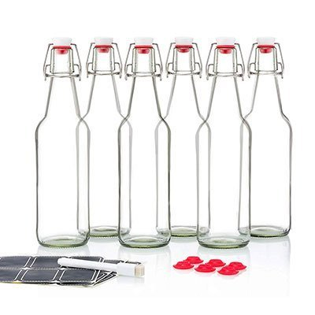
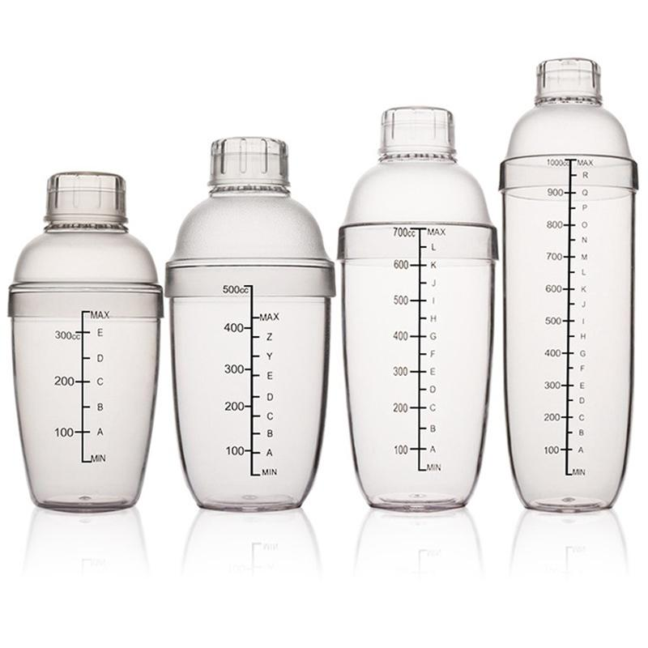
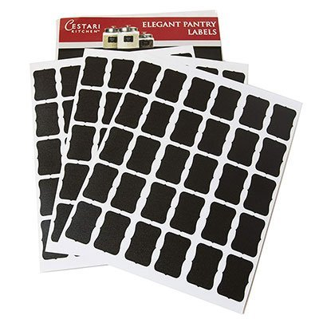
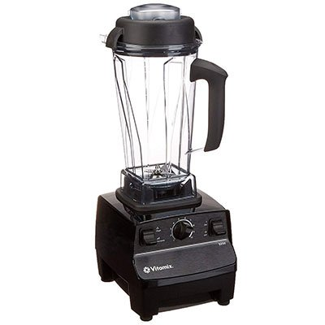
Sự kết hợp hoàn hảo của những nguyên liệu chất lượng cao sẽ làm nên linh hồn của món nước: cốt trà đậm vị, syrup xoài cô đặc rực rỡ, thạch xoài dai giòn và trân châu trắng ngọc trai để ly trà xoài thêm phần sinh động.
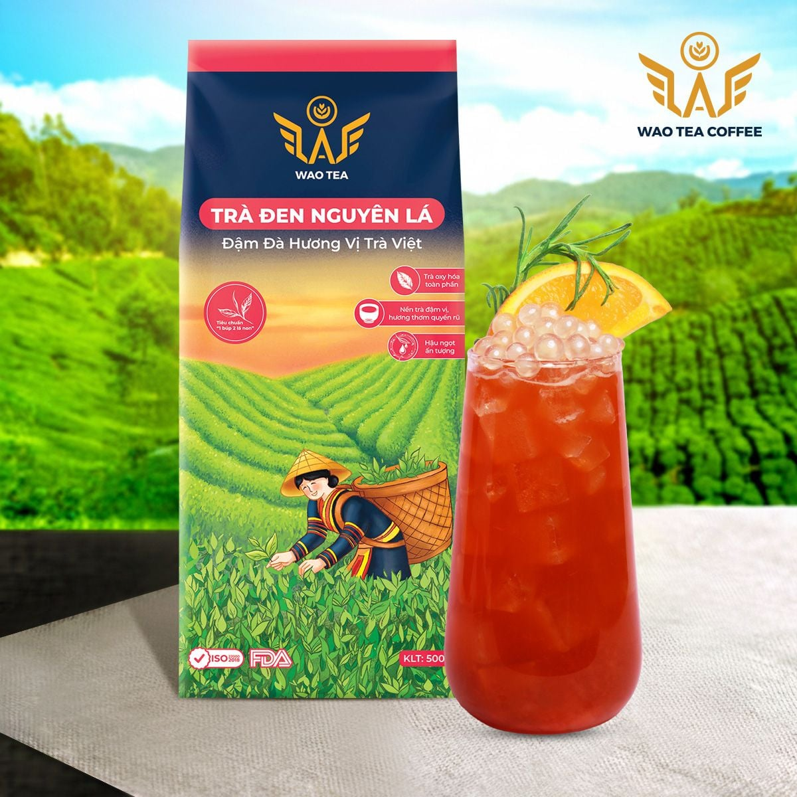
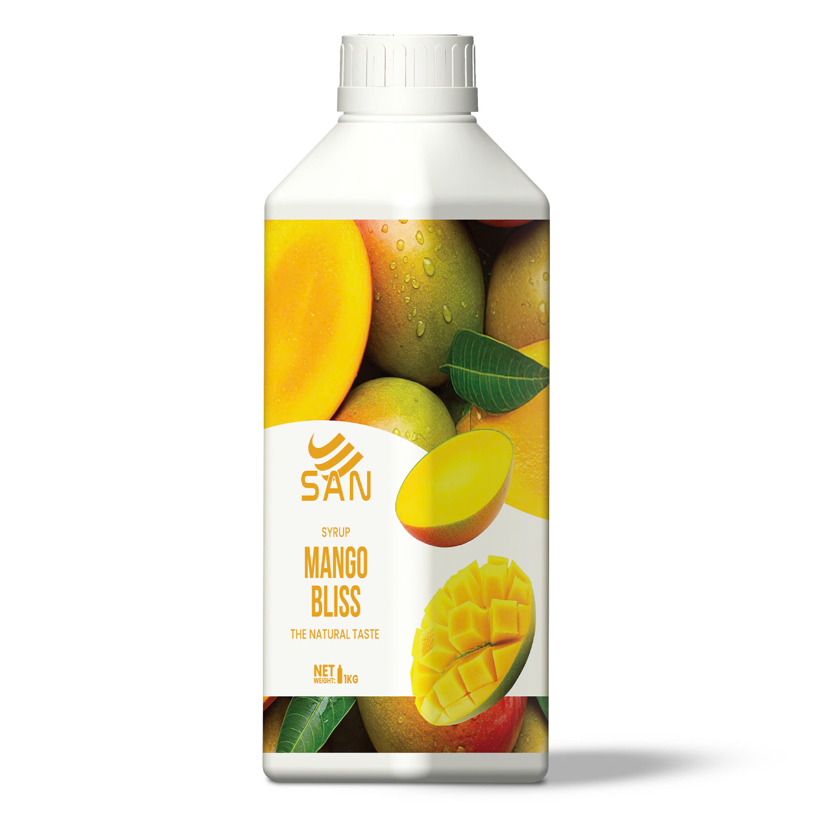
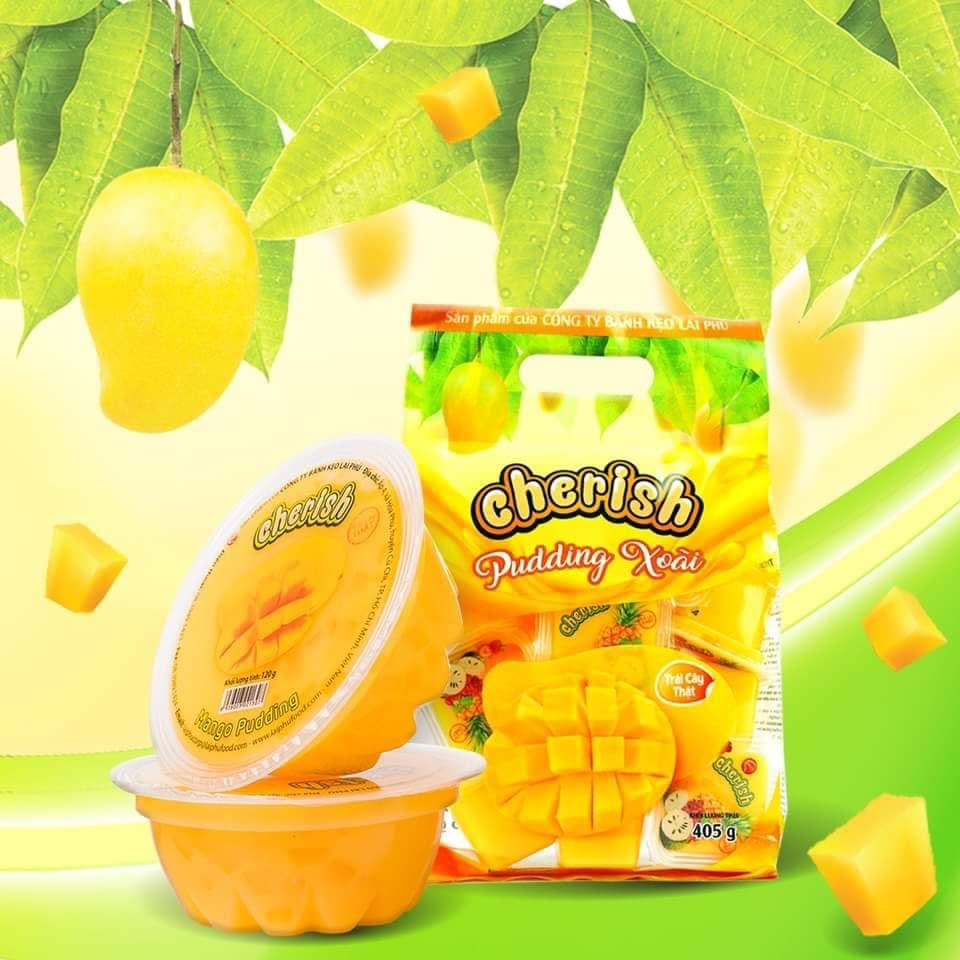
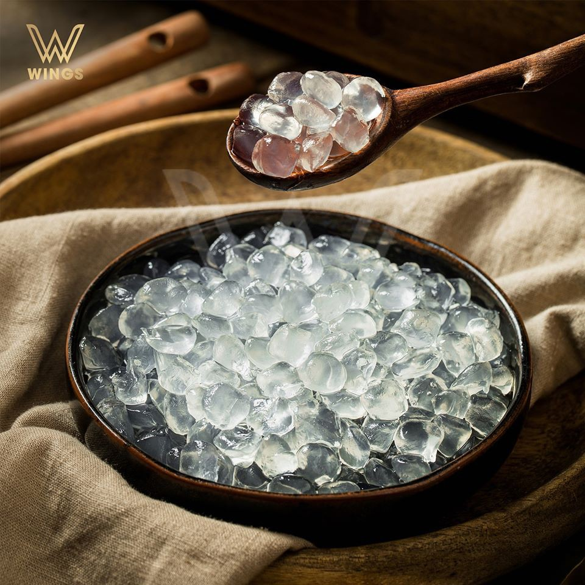
Nếu bạn muốn nâng cao kỹ năng và kiểm soát chất lượng ly nước chặt chẽ như một Barista chuyên nghiệp, đừng bỏ qua những thiết bị này. Chúng giúp bạn đong đếm chính xác từng mililit và bảo quản nguyên liệu ở nhiệt độ hoàn hảo nhất.
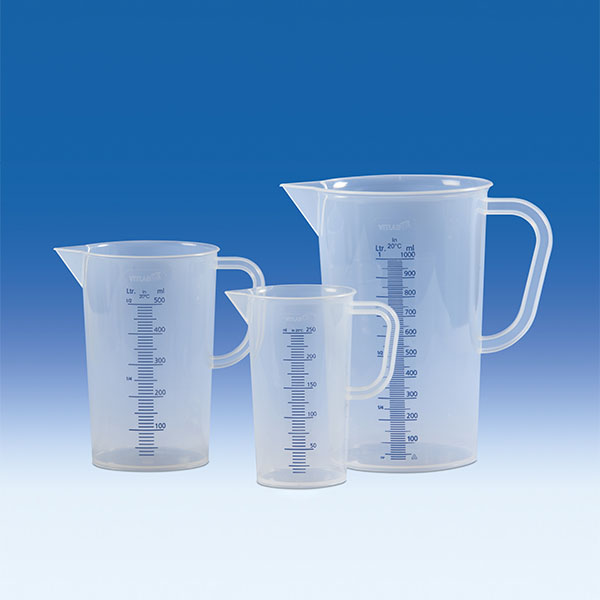
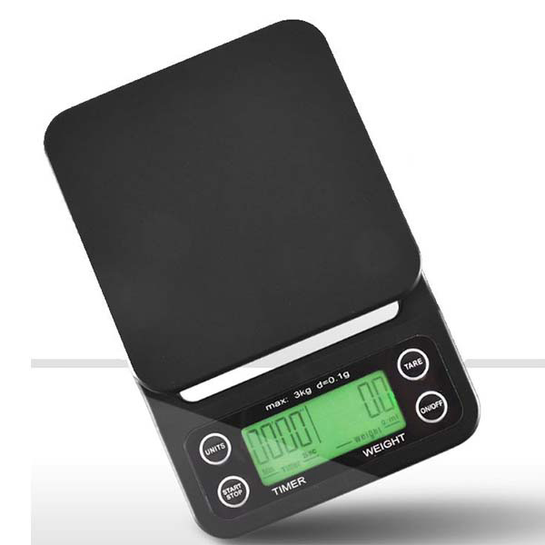
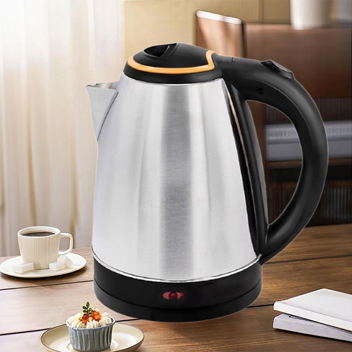
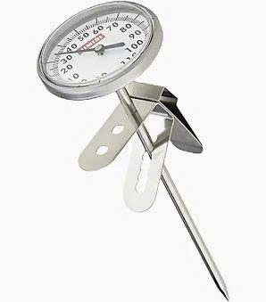